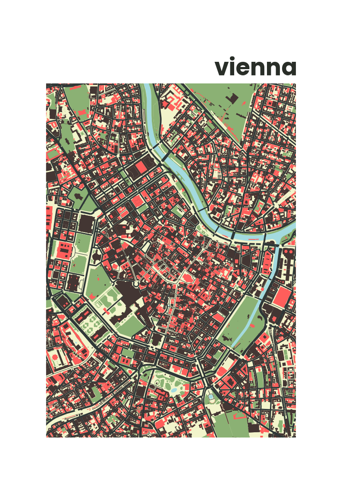

Basic workflow
Define the WGS84 coordinates of the center, as well as the extend of the map in meters. As an example, we will create a plot of Vienna which has the geographical center of
latitude = 48.210andlongitude = 16.371. These coordinates can be found e.g. on the web.Typically, you will then set the (globally defined) output size as the scaling of text and linewidth of geometries in your map will be scaled according to the final output size of your map. This ensures that printing in different output sizes always scales lines and text proportionally.
cartographr::set_output_size("A4")Next, we retrieve the openstreet map data with
get_osmdata(). Here, a width of 1200 meters is set for the
map with x_distance parameter. The height of the map is
automatically calculated by the aspect ratio of the output size if it is
omitted.
osm <- get_osmdata(48.210, 16.371, x_distance = 1200)The osm object is a list with all our geometrical shapes
stored in it (buildings, rivers, parks, …). The map can be simply
created using plot_map() function. Additionally, we can
directly set the appearance of our map using themes. Here, we decide on
making a poster of Vienna using the theme_poster(). There
are also different color palettes for the map, have a look at
get_palette() to get an idea of which color palettes exist
and how to create your own color palette.
plot_vienna <- osm |> plot_map(palette = "barcelona") +
theme_poster_poppins() +
labs(title="vienna")
plot_vienna
Lastly, we can save the map ready-to-print as pdf using
save_map().
If you prefer a bitmap format, you can also directly call
ggsave() from the ggplot2() package.
ggsave(paste0("~/vienna_a4.png"),
plot = plot.vienna,
bg = "white",
device = "png",
dpi = 96,
width = 210,
height = 297,
units = "mm")